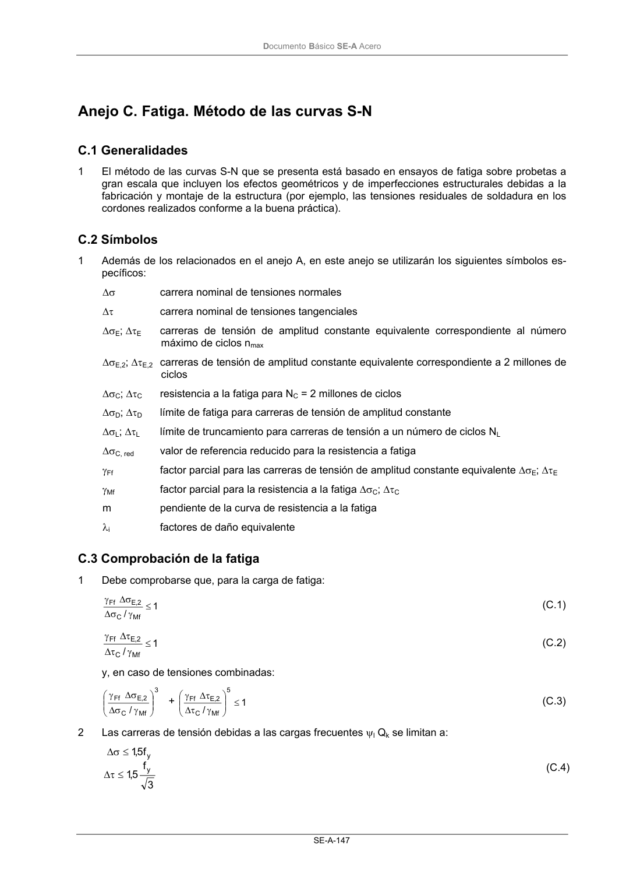

DB-SE-A Acero · edición 2007-10-23 · capa oficial
Documento DB-SE-A-oficial · SHA-256 del PDF 9ed9ea694aabfbda3bfbbef40dfe9223fde05d13c35bc2ba9751e5a96a22a64f
Copia fiel del PDF fuente · Fuente oficial
Ficha de la disposición en la fuente oficial
Formatos: JSON del segmento · Markdown
C.2 Símbolos 1 Además de los relacionados en el anejo A, en este anejo se utilizarán los siguientes símbolos es- pecíficos: ∆σ carrera nominal de tensiones normales ∆τ carrera nominal de tensiones tangenciales ∆σE; ∆τE carreras de tensión de amplitud constante equivalente correspondiente al número máximo de ciclos nmax ∆σE,2; ∆τE,2 carreras de tensión de amplitud constante equivalente correspondiente a 2 millones de ciclos ∆σC; ∆τC resistencia a la fatiga para NC = 2 millones de ciclos ∆σD; ∆τD límite de fatiga para carreras de tensión de amplitud constante ∆σL; ∆τL límite de truncamiento para carreras de tensión a un número de ciclos NL ∆σC, red valor de referencia reducido para la resistencia a fatiga γFf factor parcial para las carreras de tensión de amplitud constante equivalente ∆σE; ∆τE γMf factor parcial para la resistencia a la fatiga ∆σC; ∆τC m pendiente de la curva de resistencia a la fatiga λi factores de daño equivalente
